Mean Transformation Matrix (MLLRMEAN)
Substituting the for expressions for MLLR mean adaptation
into the auxiliary function, and using the fact that the covariance
matrices are diagonal, yields
where
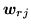 is the 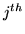 row of
 ,
,
and
Differentiating the auxiliary function with respect to the transform
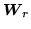 , and then maximising it with respect to the transformed mean
yields the following update
The above expressions assume that each base regression class  has a
separate transform. If regression class trees are used then the shared
transform parameters may be simply estimated by combining the
statistics of the base regression classes. The regression class tree
is used to generate the classes dynamically, so it is not known
a-priori which regression classes will be used to estimate the
transform. This does not present a problem, since
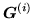 and
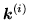 for the chosen regression class may be obtained from its
child classes (as defined by the tree). If the parent node 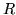 has
children
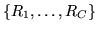 then
has a
separate transform. If regression class trees are used then the shared
transform parameters may be simply estimated by combining the
statistics of the base regression classes. The regression class tree
is used to generate the classes dynamically, so it is not known
a-priori which regression classes will be used to estimate the
transform. This does not present a problem, since
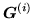 and
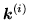 for the chosen regression class may be obtained from its
child classes (as defined by the tree). If the parent node 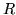 has
children
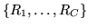 then
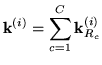
and
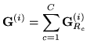
The same approach of combining statistics from multiple children can
be applied to all the estimation formulae in this section.
Back to HTK site
See front page for HTK Authors